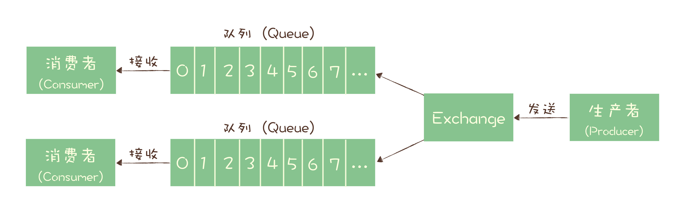
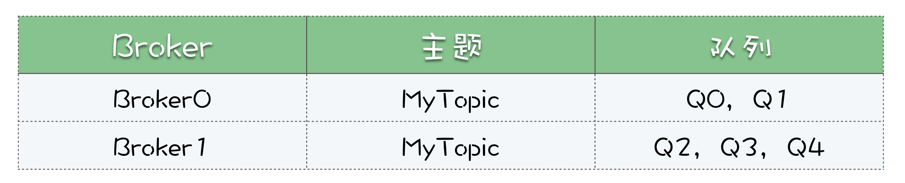
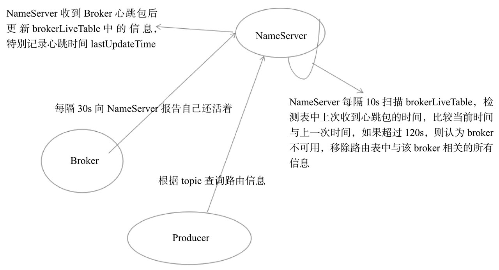
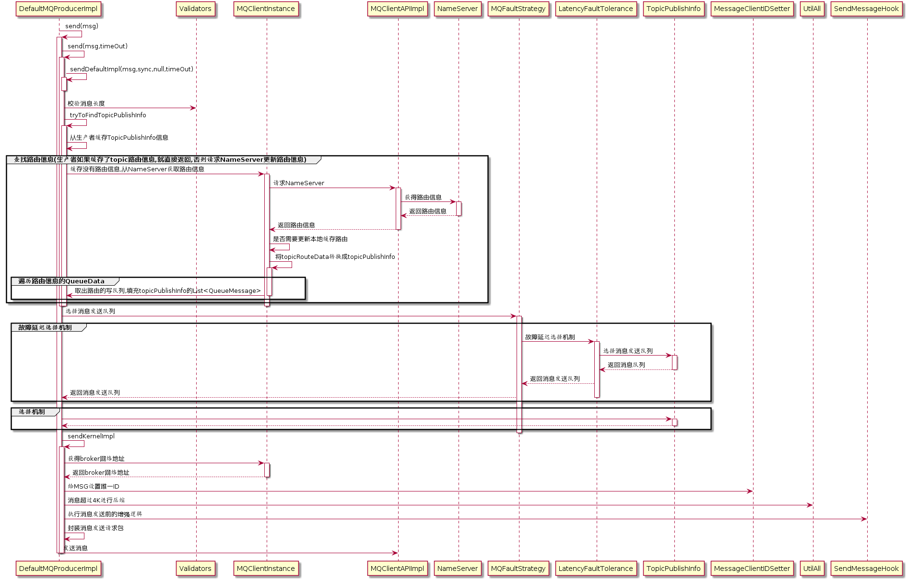

[TOC]
消息队列
消息队列主要应用场景为异步、削峰、解耦。
异步解耦
场景一：用户注册，注册时需要发送短信及邮件，并且需要写库
- 串行模式。流程如下：

缺点：流程不断加长，影响用户体验。
-
显然就会想到使用异步解决，发邮件的同时可以发短信，流程如下：

缺点：流程越多，在注册时需要调很多其他接口，代码耦合严重，出现问题不好排查
-
使用消息队列，流程如下：

注册接口只需要写库，并且推送到消息队列，至于其他业务订阅消息队列即可，达到了异步并且解耦
削峰
场景二：秒杀活动，一般由于瞬时访问量过大，服务器接收过大，会导致流量暴增，相关系统无法处理请求甚至崩溃。而加入消息队列后，系统作为消费者，根据自身应用的能力进行消息的消费，不受大流量的影响。流程如下：

常见消息队列

消息模型
最初的消息队列，就是一个严格意义上的队列。在计算机领域，“队列（Queue）”是一种数据结构，有完整而严格的定义。队列的定义是这样的：队列是先进先出（FIFO, First-In-First-Out）的线性表（Linear List）。在具体应用中通常用链表或者数组来实现。队列只允许在后端（称为 rear）进行插入操作，在前端（称为 front）进行删除操作。
这个定义里面包含几个关键点，第一个是先进先出，这里面隐含着的一个要求是，在消息入队出队过程中，需要保证这些消息严格有序，按照什么顺序写进队列，必须按照同样的顺序从队列中读出来。不过，队列是没有“读”这个操作的，“读”就是出队，也就是从队列中“删除”这条消息。
**早期的消息队列，就是按照“队列”的数据结构来设计的。**我们一起看下这个图，生产者（Producer）发消息就是入队操作，消费者（Consumer）收消息就是出队也就是删除操作，服务端存放消息的容器自然就称为“队列”。
这就是最初的一种消息模型：队列模型。

如果有多个生产者往同一个队列里面发送消息，这个队列中可以消费到的消息，就是这些生产者生产的所有消息的合集。消息的顺序就是这些生产者发送消息的自然顺序。如果有多个消费者接收同一个队列的消息，这些消费者之间实际上是竞争的关系，每个消费者只能收到队列中的一部分消息，也就是说任何一条消息只能被其中的一个消费者收到。
如果需要将一份消息数据分发给多个消费者，要求每个消费者都能收到全量的消息，例如，对于一份订单数据，风控系统、分析系统、支付系统等都需要接收消息。这个时候，单个队列就满足不了需求，一个可行的解决方式是，为每个消费者创建一个单独的队列，让生产者发送多份。
显然这是个比较蠢的做法，同样的一份消息数据被复制到多个队列中会浪费资源，更重要的是，生产者必须知道有多少个消费者。为每个消费者单独发送一份消息，这实际上违背了消息队列“解耦”这个设计初衷。
为了解决这个问题，演化出了另外一种消息模型：发布 - 订阅模型（Publish-Subscribe Pattern）

在发布 - 订阅模型中，消息的发送方称为发布者（Publisher），消息的接收方称为订阅者（Subscriber），服务端存放消息的容器称为主题（Topic）。发布者将消息发送到主题中，订阅者在接收消息之前需要先“订阅主题”。“订阅”在这里既是一个动作，同时还可以认为是主题在消费时的一个逻辑副本，每份订阅中，订阅者都可以接收到主题的所有消息。
在消息领域的历史上很长的一段时间，队列模式和发布 - 订阅模式是并存的，有些消息队列同时支持这两种消息模型，比如 ActiveMQ。我们仔细对比一下这两种模型，生产者就是发布者，消费者就是订阅者，队列就是主题，并没有本质的区别。它们最大的区别其实就是，一份消息数据能不能被消费多次的问题。
实际上，在这种发布 - 订阅模型中，如果只有一个订阅者，那它和队列模型就基本是一样的了。也就是说，发布 - 订阅模型在功能层面上是可以兼容队列模型的。
现代的消息队列产品使用的消息模型大多是这种发布 - 订阅模型。
RabbitMQ 的消息模型
RabbitMQ，它是少数依然坚持使用队列模型的产品之一。那它是怎么解决多个消费者的问题呢？在 RabbitMQ 中，Exchange 位于生产者和队列之间，生产者并不关心将消息发送给哪个队列，而是将消息发送给 Exchange，由 Exchange 上配置的策略来决定将消息投递到哪些队列中。

同一份消息如果需要被多个消费者来消费，需要配置 Exchange 将消息发送到多个队列，每个队列中都存放一份完整的消息数据，可以为一个消费者提供消费服务。这也可以变相地实现新发布 - 订阅模型中，“一份消息数据可以被多个订阅者来多次消费”这样的功能。
RocketMQ 的消息模型
RocketMQ 使用的消息模型是标准的发布 - 订阅模型，在 RocketMQ 的术语表中，生产者、消费者和主题与我在上面讲的发布 - 订阅模型中的概念是完全一样的。
但是，在 RocketMQ 也有队列（Queue）这个概念，并且队列在 RocketMQ 中是一个非常重要的概念，那队列在 RocketMQ 中的作用是什么呢？这就要从消息队列的消费机制说起。
几乎所有的消息队列产品都使用一种非常朴素的“请求 - 确认”机制，确保消息不会在传递过程中由于网络或服务器故障丢失。具体的做法也非常简单。在生产端，生产者先将消息发送给服务端，也就是 Broker，服务端在收到消息并将消息写入主题或者队列中后，会给生产者发送确认的响应。
如果生产者没有收到服务端的确认或者收到失败的响应，则会重新发送消息；在消费端，消费者在收到消息并完成自己的消费业务逻辑（比如，将数据保存到数据库中）后，也会给服务端发送消费成功的确认，服务端只有收到消费确认后，才认为一条消息被成功消费，否则它会给消费者重新发送这条消息，直到收到对应的消费成功确认。
这个确认机制很好地保证了消息传递过程中的可靠性，但是，引入这个机制在消费端带来了一个不小的问题。什么问题呢？为了确保消息的有序性，在某一条消息被成功消费之前，下一条消息是不能被消费的，否则就会出现消息空洞，违背了有序性这个原则。
也就是说，每个主题在任意时刻，至多只能有一个消费者实例在进行消费，那就没法通过水平扩展消费者的数量来提升消费端总体的消费性能。为了解决这个问题，RocketMQ 在主题下面增加了队列的概念。
**每个主题包含多个队列，通过多个队列来实现多实例并行生产和消费。**需要注意的是，RocketMQ 只在队列上保证消息的有序性，主题层面是无法保证消息的严格顺序的。
RocketMQ 中，订阅者的概念是通过消费组（Consumer Group）来体现的。每个消费组都消费主题中一份完整的消息，不同消费组之间消费进度彼此不受影响，也就是说，一条消息被 Consumer Group1 消费过，也会再给 Consumer Group2 消费。
消费组中包含多个消费者，同一个组内的消费者是竞争消费的关系，每个消费者负责消费组内的一部分消息。如果一条消息被消费者 Consumer1 消费了，那同组的其他消费者就不会再收到这条消息。
在 Topic 的消费过程中，由于消息需要被不同的组进行多次消费，所以消费完的消息并不会立即被删除，这就需要 RocketMQ 为每个消费组在每个队列上维护一个消费位置（Consumer Offset），这个位置之前的消息都被消费过，之后的消息都没有被消费过，每成功消费一条消息，消费位置就加一。这个消费位置是非常重要的概念，我们在使用消息队列的时候，丢消息的原因大多是由于消费位置处理不当导致的。
RocketMQ 的消息模型如图所示：

例子
假设有一个主题 MyTopic，我们为主题创建 5 个队列，分布到 2 个 Broker 中。

先说消息生产这一端，假设我们有 3 个生产者实例：Produer0，Produer1 和 Producer2。
这 3 个生产者是如何对应到 2 个 Broker 的，又是如何对应到 5 个队列的呢？这个很简单，不用对应，随便发。每个生产者可以在 5 个队列中轮询发送，也可以随机选一个队列发送，或者只往某个队列发送，这些都可以。比如 Producer0 要发 5 条消息，可以都发到队列 Q0 里面，也可以 5 个队列每个队列发一条。
然后说消费端，很多同学没有搞清楚消费组、消费者和队列这几个概念的对应关系。
每个消费组就是一份订阅，它要消费主题 MyTopic 下，所有队列的全部消息。注意，队列里的消息并不是消费掉就没有了，这里的“消费”，只是去队列里面读了消息，并没有删除，消费完这条消息还是在队列里面。
多个消费组在消费同一个主题时，消费组之间是互不影响的。比如我们有 2 个消费组：G0 和 G1。G0 消费了哪些消息，G1 是不知道的，也不用知道。G0 消费过的消息，G1 还可以消费。即使 G0 积压了很多消息，对 G1 来说也没有任何影响。
然后我们再说消费组的内部，一个消费组中可以包含多个消费者的实例。比如说消费组 G1，包含了 2 个消费者 C0 和 C1，那这 2 个消费者又是怎么和主题 MyTopic 的 5 个队列对应的呢？
由于消费确认机制的限制，这里面有一个原则是，在同一个消费组里面，每个队列只能被一个消费者实例占用。至于如何分配，这里面有很多策略，我就不展开说了。总之保证每个队列分配一个消费者就行了。比如，我们可以让消费者 C0 消费 Q0，Q1 和 Q2，C1 消费 Q3 和 Q4，如果 C0 宕机了，会触发重新分配，这时候 C1 同时消费全部 5 个队列。
再强调一下，队列占用只是针对消费组内部来说的，对于其他的消费组来说是没有影响的。比如队列 Q2 被消费组 G1 的消费者 C1 占用了，对于消费组 G2 来说，是完全没有影响的，G2 也可以分配它的消费者来占用和消费队列 Q2。
最后说一下消费位置，每个消费组内部维护自己的一组消费位置，每个队列对应一个消费位置。消费位置在服务端保存，并且，消费位置和消费者是没有关系的。每个消费位置一般就是一个整数，记录这个消费组中，这个队列消费到哪个位置了，这个位置之前的消息都成功消费了，之后的消息都没有消费或者正在消费。
我把咱们这个例子的消费位置整理成下面的表格，便于你理解。

你可以看到，这个表格中并没有消费者这一列，也就是说消费者和消费位置是没有关系的。
Kafka 的消息模型
我们再来看看另一种常见的消息队列 Kafka，Kafka 的消息模型和 RocketMQ 是完全一样的，我刚刚讲的所有 RocketMQ 中对应的概念，和生产消费过程中的确认机制，都完全适用于 Kafka。唯一的区别是，在 Kafka 中，队列这个概念的名称不一样，Kafka 中对应的名称是“分区（Partition）”，含义和功能是没有任何区别的。
RocketMQ详解
技术架构

RocketMQ架构上主要分为四部分，如上图所示:
-
Producer：消息发布的角色，支持分布式集群方式部署。Producer通过MQ的负载均衡模块选择相应的Broker集群队列进行消息投递，投递的过程支持快速失败并且低延迟。
-
Consumer：消息消费的角色，支持分布式集群方式部署。支持以push推，pull拉两种模式对消息进行消费。同时也支持集群方式和广播方式的消费，它提供实时消息订阅机制，可以满足大多数用户的需求。
-
NameServer：NameServer是一个非常简单的Topic路由注册中心，其角色类似Dubbo中的zookeeper，支持Broker的动态注册与发现。主要包括两个功能：
- Broker管理，NameServer接受Broker集群的注册信息并且保存下来作为路由信息的基本数据。然后提供心跳检测机制，检查Broker是否还存活；
- 路由信息管理，每个NameServer将保存关于Broker集群的整个路由信息和用于客户端查询的队列信息。
然后Producer和Consumser通过NameServer就可以知道整个Broker集群的路由信息，从而进行消息的投递和消费。NameServer通常也是集群的方式部署，各实例间相互不进行信息通讯。Broker是向每一台NameServer注册自己的路由信息，所以每一个NameServer实例上面都保存一份完整的路由信息。当某个NameServer因某种原因下线了，Broker仍然可以向其它NameServer同步其路由信息，Producer和Consumer仍然可以动态感知Broker的路由的信息。
-
BrokerServer：Broker主要负责消息的存储、投递和查询以及服务高可用保证，为了实现这些功能，Broker包含了以下几个重要子模块。
- Remoting Module：整个Broker的实体，负责处理来自Client端的请求。
- Client Manager：负责管理客户端(Producer/Consumer)和维护Consumer的Topic订阅信息。
- Store Service：提供方便简单的API接口处理消息存储到物理硬盘和查询功能。
- HA Service：高可用服务，提供Master Broker 和 Slave Broker之间的数据同步功能。
- Index Service：根据特定的Message key对投递到Broker的消息进行索引服务，以提供消息的快速查询。

部署架构

RocketMQ 网络部署特点
- NameServer是一个几乎无状态节点，可集群部署，节点之间无任何信息同步。
- Broker部署相对复杂，Broker分为Master与Slave，一个Master可以对应多个Slave，但是一个Slave只能对应一个Master，Master与Slave 的对应关系通过指定相同的BrokerName，不同的BrokerId 来定义，BrokerId为0表示Master，非0表示Slave。Master也可以部署多个。每个Broker与NameServer集群中的所有节点建立长连接，定时注册Topic信息到所有NameServer。 注意：当前RocketMQ版本在部署架构上支持一Master多Slave，但只有BrokerId=1的从服务器才会参与消息的读负载。
- Producer与NameServer集群中的其中一个节点（随机选择）建立长连接，定期从NameServer获取Topic路由信息，并向提供Topic 服务的Master建立长连接，且定时向Master发送心跳。Producer完全无状态，可集群部署。
- Consumer与NameServer集群中的其中一个节点（随机选择）建立长连接，定期从NameServer获取Topic路由信息，并向提供Topic服务的Master、Slave建立长连接，且定时向Master、Slave发送心跳。Consumer既可以从Master订阅消息，也可以从Slave订阅消息，消费者在向Master拉取消息时，Master服务器会根据拉取偏移量与最大偏移量的距离（判断是否读老消息，产生读I/O），以及从服务器是否可读等因素建议下一次是从Master还是Slave拉取。
结合部署架构图，描述集群工作流程：
- 启动NameServer，NameServer起来后监听端口，等待Broker、Producer、Consumer连上来，相当于一个路由控制中心。
- Broker启动，跟所有的NameServer保持长连接，定时发送心跳包。心跳包中包含当前Broker信息(IP+端口等)以及存储所有Topic信息。注册成功后，NameServer集群中就有Topic跟Broker的映射关系。
- 收发消息前，先创建Topic，创建Topic时需要指定该Topic要存储在哪些Broker上，也可以在发送消息时自动创建Topic。
- Producer发送消息，启动时先跟NameServer集群中的其中一台建立长连接，并从NameServer中获取当前发送的Topic存在哪些Broker上，轮询从队列列表中选择一个队列，然后与队列所在的Broker建立长连接从而向Broker发消息。
- Consumer跟Producer类似，跟其中一台NameServer建立长连接，获取当前订阅Topic存在哪些Broker上，然后直接跟Broker建立连接通道，开始消费消息。
代码详解
个人认为如果想了解一个中间件，可以先由整体架构、思想进行学习，然后对每部分进行深入研究，后面就对每一个部分进行详解，由简入繁，先看NameServer是怎么实现的
NameServer
作为注册中心，基本通讯流程如下：
(1) Broker启动后需要完成一次将自己注册至NameServer的操作；随后每隔30s时间定时向NameServer上报Topic路由信息。
(2) 消息生产者Producer作为客户端发送消息时候，需要根据消息的Topic从本地缓存的TopicPublishInfoTable获取路由信息。如果没有则更新路由信息会从NameServer上重新拉取，同时Producer会默认每隔30s向NameServer拉取一次路由信息。
(3) 消息生产者Producer根据2）中获取的路由信息选择一个队列（MessageQueue）进行消息发送；Broker作为消息的接收者接收消息并落盘存储。
(4) 消息消费者Consumer根据2）中获取的路由信息，并再完成客户端的负载均衡后，选择其中的某一个或者某几个消息队列来拉取消息并进行消费。
作为注册中心主要包含以下几个部分：路由注册、 路由删除、路由发现，主要由以下几个map实现
private final Map<String/* topic */, Map<String, QueueData>> topicQueueTable;
private final Map<String/* brokerName */, BrokerData> brokerAddrTable;
private final Map<String/* clusterName */, Set<String/* brokerName */>> clusterAddrTable;
private final Map<BrokerAddrInfo/* brokerAddr */, BrokerLiveInfo> brokerLiveTable;
private final Map<BrokerAddrInfo/* brokerAddr */, List<String>/* Filter Server */> filterServerTable;
private final Map<String/* topic */, Map<String/*brokerName*/, TopicQueueMappingInfo>> topicQueueMappingInfoTable;
-
topicQueueTable:Topic消息队列路由信息，消息发送时根据路由表进行负载均衡。
-
brokerAddrTable:Broker基础信息，包含brokerName、所属集群名称、主备Broker地址。
-
clusterAddrTable:Broker集群信息，存储集群中所有Broker名称。
-
brokerLiveTable:Broker状态信息。NameServer每次收到心跳包时会替换该信息。
-
filterServerTable:Broker上的FilterServer列表，用于类模式消息过滤。
路由注册
路由注册是通过Broker与NameServer的心跳功能实现的。
-
Broker启动时向集群中所有的NameServer发送心跳语句(心跳包中包含BrokerId、Broker地址、Broker名称、Broker所属集群名称、Broker关联的FilterServer列表)，每隔30s向集群中所有NameServer发送心跳包
-
NameServer收到Broker心跳包时会更新brokerLiveTable缓存中BrokerLiveInfo的lastUpdateTimestamp，然后Name Server每隔10s扫描brokerLiveTable，如果连续120s没有收到心跳包，NameServer将移除该Broker的路由信息同时关闭Socket连接
broker 发送心跳包
//每隔30s上报Broker信息到NameServer
scheduledFutures.add(this.scheduledExecutorService.scheduleAtFixedRate(new AbstractBrokerRunnable(this.getBrokerIdentity()) {
@Override
public void run2() {
try {
if (System.currentTimeMillis() < shouldStartTime) {
BrokerController.LOG.info("Register to namesrv after {}", shouldStartTime);
return;
}
if (isIsolated) {
BrokerController.LOG.info("Skip register for broker is isolated");
return;
}
BrokerController.this.registerBrokerAll(true, false, brokerConfig.isForceRegister());
} catch (Throwable e) {
BrokerController.LOG.error("registerBrokerAll Exception", e);
}
}
}, 1000 * 10, Math.max(10000, Math.min(brokerConfig.getRegisterNameServerPeriod(), 60000)), TimeUnit.MILLISECONDS));
这个其实就是使用了定时任务来实现每隔30s向集群中所有NameServer发送心跳包
NameServer收到Broker心跳包
public RegisterBrokerResult registerBroker(
final String clusterName,
final String brokerAddr,
final String brokerName,
final long brokerId,
final String haServerAddr,
final Long timeoutMillis,
final Boolean enableActingMaster,
final TopicConfigSerializeWrapper topicConfigWrapper,
final List<String> filterServerList,
final Channel channel) {
RegisterBrokerResult result = new RegisterBrokerResult();
try {
try {
// 加锁
this.lock.writeLock().lockInterruptibly();
// 维护clusterAddrTable
Set<String> brokerNames = this.clusterAddrTable.computeIfAbsent(clusterName, k -> new HashSet<>());
brokerNames.add(brokerName);
boolean registerFirst = false;
// 维护brokerAddrTable
BrokerData brokerData = this.brokerAddrTable.get(brokerName);
// 第一次注册,则创建brokerData
if (null == brokerData) {
registerFirst = true;
brokerData = new BrokerData(clusterName, brokerName, new HashMap<>());
this.brokerAddrTable.put(brokerName, brokerData);
}
// 非第一次注册,更新Broker
boolean isOldVersionBroker = enableActingMaster == null;
brokerData.setEnableActingMaster(!isOldVersionBroker && enableActingMaster);
Map<Long, String> brokerAddrsMap = brokerData.getBrokerAddrs();
boolean isMinBrokerIdChanged = false;
long prevMinBrokerId = 0;
if (!brokerAddrsMap.isEmpty()) {
prevMinBrokerId = Collections.min(brokerAddrsMap.keySet());
}
if (brokerId < prevMinBrokerId) {
isMinBrokerIdChanged = true;
}
//Switch slave to master: first remove <1, IP:PORT> in namesrv, then add <0, IP:PORT>
//The same IP:PORT must only have one record in brokerAddrTable
brokerAddrsMap.entrySet().removeIf(item -> null != brokerAddr && brokerAddr.equals(item.getValue()) && brokerId != item.getKey());
//If Local brokerId stateVersion bigger than the registering one,
String oldBrokerAddr = brokerAddrsMap.get(brokerId);
if (null != oldBrokerAddr && !oldBrokerAddr.equals(brokerAddr)) {
BrokerLiveInfo oldBrokerInfo = brokerLiveTable.get(new BrokerAddrInfo(clusterName, oldBrokerAddr));
if (null != oldBrokerInfo) {
long oldStateVersion = oldBrokerInfo.getDataVersion().getStateVersion();
long newStateVersion = topicConfigWrapper.getDataVersion().getStateVersion();
if (oldStateVersion > newStateVersion) {
log.warn("Registered Broker conflicts with the existed one, just ignore.: Cluster:{}, BrokerName:{}, BrokerId:{}, " +
"Old BrokerAddr:{}, Old Version:{}, New BrokerAddr:{}, New Version:{}.",
clusterName, brokerName, brokerId, oldBrokerAddr, oldStateVersion, brokerAddr, newStateVersion);
//Remove the rejected brokerAddr from brokerLiveTable.
brokerLiveTable.remove(new BrokerAddrInfo(clusterName, brokerAddr));
return result;
}
}
}
String oldAddr = brokerAddrsMap.put(brokerId, brokerAddr);
registerFirst = registerFirst || (StringUtils.isEmpty(oldAddr));
boolean isMaster = MixAll.MASTER_ID == brokerId;
boolean isPrimeSlave = !isOldVersionBroker && !isMaster
&& brokerId == Collections.min(brokerAddrsMap.keySet());
// 维护topicQueueTable
if (null != topicConfigWrapper && (isMaster || isPrimeSlave)) {
ConcurrentMap<String, TopicConfig> tcTable =
topicConfigWrapper.getTopicConfigTable();
if (tcTable != null) {
for (Map.Entry<String, TopicConfig> entry : tcTable.entrySet()) {
if (registerFirst || this.isTopicConfigChanged(clusterName, brokerAddr,
topicConfigWrapper.getDataVersion(), brokerName,
entry.getValue().getTopicName())) {
final TopicConfig topicConfig = entry.getValue();
if (isPrimeSlave) {
// Wipe write perm for prime slave
topicConfig.setPerm(topicConfig.getPerm() & (~PermName.PERM_WRITE));
}
this.createAndUpdateQueueData(brokerName, topicConfig);
}
}
}
if (this.isBrokerTopicConfigChanged(clusterName, brokerAddr, topicConfigWrapper.getDataVersion()) || registerFirst) {
TopicConfigAndMappingSerializeWrapper mappingSerializeWrapper = TopicConfigAndMappingSerializeWrapper.from(topicConfigWrapper);
Map<String, TopicQueueMappingInfo> topicQueueMappingInfoMap = mappingSerializeWrapper.getTopicQueueMappingInfoMap();
//the topicQueueMappingInfoMap should never be null, but can be empty
for (Map.Entry<String, TopicQueueMappingInfo> entry : topicQueueMappingInfoMap.entrySet()) {
if (!topicQueueMappingInfoTable.containsKey(entry.getKey())) {
topicQueueMappingInfoTable.put(entry.getKey(), new HashMap<String, TopicQueueMappingInfo>());
}
//Note asset brokerName equal entry.getValue().getBname()
//here use the mappingDetail.bname
topicQueueMappingInfoTable.get(entry.getKey()).put(entry.getValue().getBname(), entry.getValue());
}
}
}
// 维护brokerLiveTable
BrokerAddrInfo brokerAddrInfo = new BrokerAddrInfo(clusterName, brokerAddr);
BrokerLiveInfo prevBrokerLiveInfo = this.brokerLiveTable.put(brokerAddrInfo,
new BrokerLiveInfo(
System.currentTimeMillis(),
timeoutMillis == null ? DEFAULT_BROKER_CHANNEL_EXPIRED_TIME : timeoutMillis,
topicConfigWrapper == null ? new DataVersion() : topicConfigWrapper.getDataVersion(),
channel,
haServerAddr));
if (null == prevBrokerLiveInfo) {
log.info("new broker registered, {} HAService: {}", brokerAddrInfo, haServerAddr);
}
// 维护filterServerList
if (filterServerList != null) {
if (filterServerList.isEmpty()) {
this.filterServerTable.remove(brokerAddrInfo);
} else {
this.filterServerTable.put(brokerAddrInfo, filterServerList);
}
}
if (MixAll.MASTER_ID != brokerId) {
String masterAddr = brokerData.getBrokerAddrs().get(MixAll.MASTER_ID);
if (masterAddr != null) {
BrokerAddrInfo masterAddrInfo = new BrokerAddrInfo(clusterName, masterAddr);
BrokerLiveInfo masterLiveInfo = this.brokerLiveTable.get(masterAddrInfo);
if (masterLiveInfo != null) {
result.setHaServerAddr(masterLiveInfo.getHaServerAddr());
result.setMasterAddr(masterAddr);
}
}
}
if (isMinBrokerIdChanged && namesrvConfig.isNotifyMinBrokerIdChanged()) {
notifyMinBrokerIdChanged(brokerAddrsMap, null,
this.brokerLiveTable.get(brokerAddrInfo).getHaServerAddr());
}
} finally {
this.lock.writeLock().unlock();
}
} catch (Exception e) {
log.error("registerBroker Exception", e);
}
return result;
}
这个代码看起来很复杂，实际上很简单

因为NameServe与Broker保持长连接，所以需要心跳机制来检测连接是否存在，做法为，Broker状态存储在brokerLiveTable中，NameServer每收到一个心跳包，将更新brokerLiveTable中关于Broker的信息(lastUpdateTimestamp主要是上次更新时间)以及路由表（topicQueueTable、brokerAddrTable、brokerLiveTable、filterServerTable）。更新上述路由表（HashTable）使用了锁粒度较少的读写锁，允许多个消息发送者（Producer）并发读，保证消息发送时的高并发。但同一时刻NameServer只处理一个Broker心跳包，多个心跳包请求串行执行
路由删除
NameServer会每隔10s扫描brokerLiveTable状态表，如果BrokerLive的lastUpdateTimestamp的时间戳距当前时间超过120s，则认为Broker失效，移除该Broker，关闭与Broker的长连接，并同时更新topicQueueTable、brokerAddrTable、brokerLiveTable、filterServerTable。RocktMQ有两个触发点来触发路由删除。
- NameServer每隔10s扫描brokerLiveTable检测上次心跳包与当前系统时间的时间差，如果时间戳大于120s，则需要移除该Broker信息。
- Broker在正常被关闭的情况下，会执行unregisterBroker指令。
// 启动NameServer后，每隔10s扫描brokerLiveTable
this.scanExecutorService.scheduleAtFixedRate(NamesrvController.this.routeInfoManager::scanNotActiveBroker,
5, this.namesrvConfig.getScanNotActiveBrokerInterval(), TimeUnit.MILLISECONDS);
public void scanNotActiveBroker() {
try {
log.info("start scanNotActiveBroker");
// 遍历brokerLiveTable，如果BrokerLive的lastUpdateTimestamp的时间戳距当前时间超过120s，关闭Channel，然后删除与该Broker相关的路由信息
for (Entry<BrokerAddrInfo, BrokerLiveInfo> next : this.brokerLiveTable.entrySet()) {
long last = next.getValue().getLastUpdateTimestamp();
long timeoutMillis = next.getValue().getHeartbeatTimeoutMillis();
if ((last + timeoutMillis) < System.currentTimeMillis()) {
RemotingUtil.closeChannel(next.getValue().getChannel());
log.warn("The broker channel expired, {} {}ms", next.getKey(), timeoutMillis);
this.onChannelDestroy(next.getKey());
}
}
} catch (Exception e) {
log.error("scanNotActiveBroker exception", e);
}
}
看下
public void onChannelDestroy(BrokerAddrInfo brokerAddrInfo) {
UnRegisterBrokerRequestHeader unRegisterRequest = new UnRegisterBrokerRequestHeader();
boolean needUnRegister = false;
if (brokerAddrInfo != null) {
try {
try {
this.lock.readLock().lockInterruptibly();
needUnRegister = setupUnRegisterRequest(unRegisterRequest, brokerAddrInfo);
} finally {
this.lock.readLock().unlock();
}
} catch (Exception e) {
log.error("onChannelDestroy Exception", e);
}
}
if (needUnRegister) {
boolean result = this.submitUnRegisterBrokerRequest(unRegisterRequest);
log.info("the broker's channel destroyed, submit the unregister request at once, " +
"broker info: {}, submit result: {}", unRegisterRequest, result);
}
}
// 把要删除的路由信息放入到队列中
public boolean submitUnRegisterBrokerRequest(UnRegisterBrokerRequestHeader unRegisterRequest) {
return this.unRegisterService.submit(unRegisterRequest);
}
// 启动时，启动了该线程
public void run() {
while (!this.isStopped()) {
try {
// 每三秒钟从队列中拉取然后进行路由删除逻辑
final UnRegisterBrokerRequestHeader request = unRegisterQueue.poll(3, TimeUnit.SECONDS);
if (request != null) {
Set<UnRegisterBrokerRequestHeader> unRegisterRequests = new HashSet<>();
unRegisterQueue.drainTo(unRegisterRequests);
// Add polled request
unRegisterRequests.add(request);
this.routeInfoManager.unRegisterBroker(unRegisterRequests);
}
} catch (Throwable e) {
log.error("Handle unregister broker request failed", e);
}
}
}
这里为什么要先放到队列，然后再每隔三秒钟去队列拉取并不是很理解
public void unRegisterBroker(Set<UnRegisterBrokerRequestHeader> unRegisterRequests) {
try {
try {
Set<String> removedBroker = new HashSet<>();
Set<String> reducedBroker = new HashSet<>();
Map<String, BrokerStatusChangeInfo> needNotifyBrokerMap = new HashMap<>();
this.lock.writeLock().lockInterruptibly();
for (final UnRegisterBrokerRequestHeader unRegisterRequest : unRegisterRequests) {
final String brokerName = unRegisterRequest.getBrokerName();
final String clusterName = unRegisterRequest.getClusterName();
BrokerAddrInfo brokerAddrInfo = new BrokerAddrInfo(clusterName, unRegisterRequest.getBrokerAddr());
BrokerLiveInfo brokerLiveInfo = this.brokerLiveTable.remove(brokerAddrInfo);
log.info("unregisterBroker, remove from brokerLiveTable {}, {}",
brokerLiveInfo != null ? "OK" : "Failed",
brokerAddrInfo
);
this.filterServerTable.remove(brokerAddrInfo);
boolean removeBrokerName = false;
boolean isMinBrokerIdChanged = false;
BrokerData brokerData = this.brokerAddrTable.get(brokerName);
if (null != brokerData) {
if (!brokerData.getBrokerAddrs().isEmpty() &&
unRegisterRequest.getBrokerId().equals(Collections.min(brokerData.getBrokerAddrs().keySet()))) {
isMinBrokerIdChanged = true;
}
String addr = brokerData.getBrokerAddrs().remove(unRegisterRequest.getBrokerId());
log.info("unregisterBroker, remove addr from brokerAddrTable {}, {}",
addr != null ? "OK" : "Failed",
brokerAddrInfo
);
if (brokerData.getBrokerAddrs().isEmpty()) {
this.brokerAddrTable.remove(brokerName);
log.info("unregisterBroker, remove name from brokerAddrTable OK, {}",
brokerName
);
removeBrokerName = true;
} else if (isMinBrokerIdChanged) {
needNotifyBrokerMap.put(brokerName, new BrokerStatusChangeInfo(
brokerData.getBrokerAddrs(), addr, null));
}
}
if (removeBrokerName) {
Set<String> nameSet = this.clusterAddrTable.get(clusterName);
if (nameSet != null) {
boolean removed = nameSet.remove(brokerName);
log.info("unregisterBroker, remove name from clusterAddrTable {}, {}",
removed ? "OK" : "Failed",
brokerName);
if (nameSet.isEmpty()) {
this.clusterAddrTable.remove(clusterName);
log.info("unregisterBroker, remove cluster from clusterAddrTable {}",
clusterName
);
}
}
removedBroker.add(brokerName);
} else {
reducedBroker.add(brokerName);
}
}
cleanTopicByUnRegisterRequests(removedBroker, reducedBroker);
if (!needNotifyBrokerMap.isEmpty() && namesrvConfig.isNotifyMinBrokerIdChanged()) {
notifyMinBrokerIdChanged(needNotifyBrokerMap);
}
} finally {
this.lock.writeLock().unlock();
}
} catch (Exception e) {
log.error("unregisterBroker Exception", e);
}
}
这段代码就是，执行删除路由的逻辑，具体逻辑没什么好说的，就是在维护几个map，但需要注意又用到了写锁，这可能就是高手的代码，处处有锁。
路由发现
路由发现是非实时的，当Topic路由出现变化后，NameServer不主动推送给客户端，而是由客户端定时拉取主题最新的路由
public RemotingCommand getRouteInfoByTopic(ChannelHandlerContext ctx,
RemotingCommand request) throws RemotingCommandException {
final RemotingCommand response = RemotingCommand.createResponseCommand(null);
final GetRouteInfoRequestHeader requestHeader =
(GetRouteInfoRequestHeader) request.decodeCommandCustomHeader(GetRouteInfoRequestHeader.class);
if (requestHeader.getTopic().indexOf(GetRouteInfoRequestHeader.split) < 0) {
TopicRouteData topicRouteData = this.namesrvController.getRouteInfoManager().pickupTopicRouteData(requestHeader.getTopic());
if (topicRouteData != null) {
if (this.namesrvController.getNamesrvConfig().isOrderMessageEnable()) {
String orderTopicConf =
this.namesrvController.getKvConfigManager().getKVConfig(NamesrvUtil.NAMESPACE_ORDER_TOPIC_CONFIG,
requestHeader.getTopic());
topicRouteData.setOrderTopicConf(orderTopicConf);
}
byte[] content = topicRouteData.encode();
response.setBody(content);
response.setCode(ResponseCode.SUCCESS);
response.setRemark(null);
return response;
}
response.setCode(ResponseCode.TOPIC_NOT_EXIST);
response.setRemark("No topic route info in name server for the topic: " + requestHeader.getTopic()
+ FAQUrl.suggestTodo(FAQUrl.APPLY_TOPIC_URL));
return response;
}
String[] topics = requestHeader.getTopic().split(String.valueOf(GetRouteInfoRequestHeader.split));
TopicRouteDatas topicRouteDatas = new TopicRouteDatas();
for (String topic : topics) {
//调用RouteInfoManager的方法,从路由表topicQueueTable、brokerAddrTable、filterServerTable中分别填充TopicRouteData的List<QueueData>、List<BrokerData>、filterServer
TopicRouteData topicRouteData = this.namesrvController.getRouteInfoManager().pickupTopicRouteData(topic);
if (topicRouteData == null) {
continue;
}
// 如果找到主题对应你的路由信息并且该主题为顺序消息，则从NameServer KVConfig中获取关于顺序消息相关的配置填充路由信息
if (this.namesrvController.getNamesrvConfig().isOrderMessageEnable()) {
String orderTopicConf =
this.namesrvController.getKvConfigManager().getKVConfig(NamesrvUtil.NAMESPACE_ORDER_TOPIC_CONFIG, topic);
topicRouteData.setOrderTopicConf(orderTopicConf);
}
topicRouteDatas.getTopics().put(topic, topicRouteData);
}
response.setBody(topicRouteDatas.encode());
response.setCode(ResponseCode.SUCCESS);
response.setRemark(null);
return response;
}
总结

NameServer是一种典型的心跳机制，即定时任务发起心跳，收到心跳记录心跳时间，再使用定时任务扫描判断心跳是否超过设置时间。
Producer
作为生产者，需要搞清的东西是，消息的发送过程，即发到哪个broker哪个Topic哪个队列
Producer端在发送消息的时候，会先根据Topic找到指定的TopicPublishInfo，在获取了TopicPublishInfo路由信息后，RocketMQ的客户端在默认方式下selectOneMessageQueue()方法会从TopicPublishInfo中的messageQueueList中选择一个队列（MessageQueue）进行发送消息。具体的容错策略均在MQFaultStrategy这个类中定义。这里有一个sendLatencyFaultEnable开关变量，如果开启，在随机递增取模的基础上，再过滤掉not available的Broker代理。所谓的"latencyFaultTolerance"，是指对之前失败的，按一定的时间做退避。例如，如果上次请求的latency超过550Lms，就退避3000Lms；超过1000L，就退避60000L；如果关闭，采用随机递增取模的方式选择一个队列（MessageQueue）来发送消息，latencyFaultTolerance机制是实现消息发送高可用的核心关键所在。
启动流程

这个生产者的启动流程看起来比较复杂，所以需要看下,代码入口在DefaultMQProducerImpl的start方法
public void start(final boolean startFactory) throws MQClientException {
switch (this.serviceState) {
case CREATE_JUST:
this.serviceState = ServiceState.START_FAILED;
// 检查生产者组是否满足要求
this.checkConfig();
// 更改当前instanceName为进程ID
if (!this.defaultMQProducer.getProducerGroup().equals(MixAll.CLIENT_INNER_PRODUCER_GROUP)) {
this.defaultMQProducer.changeInstanceNameToPID();
}
// 获得MQ客户端实例
this.mQClientFactory = MQClientManager.getInstance().getOrCreateMQClientInstance(this.defaultMQProducer, rpcHook);
// 注册实例到生产者表中
boolean registerOK = mQClientFactory.registerProducer(this.defaultMQProducer.getProducerGroup(), this);
if (!registerOK) {
this.serviceState = ServiceState.CREATE_JUST;
throw new MQClientException("The producer group[" + this.defaultMQProducer.getProducerGroup()
+ "] has been created before, specify another name please." + FAQUrl.suggestTodo(FAQUrl.GROUP_NAME_DUPLICATE_URL),
null);
}
this.topicPublishInfoTable.put(this.defaultMQProducer.getCreateTopicKey(), new TopicPublishInfo());
// 启动生产者
if (startFactory) {
mQClientFactory.start();
}
log.info("the producer [{}] start OK. sendMessageWithVIPChannel={}", this.defaultMQProducer.getProducerGroup(),
this.defaultMQProducer.isSendMessageWithVIPChannel());
this.serviceState = ServiceState.RUNNING;
break;
case RUNNING:
case START_FAILED:
case SHUTDOWN_ALREADY:
throw new MQClientException("The producer service state not OK, maybe started once, "
+ this.serviceState
+ FAQUrl.suggestTodo(FAQUrl.CLIENT_SERVICE_NOT_OK),
null);
default:
break;
}
this.mQClientFactory.sendHeartbeatToAllBrokerWithLock();
RequestFutureHolder.getInstance().startScheduledTask(this);
}
这段代码跟着流程图来看就好了，下面这个代码有点意思的
public MQClientInstance getOrCreateMQClientInstance(final ClientConfig clientConfig, RPCHook rpcHook) {
// 构建客户端ID
String clientId = clientConfig.buildMQClientId();
// 根据clientId获取
MQClientInstance instance = this.factoryTable.get(clientId);
// 如果为空就创建实例，并放入实例表中
if (null == instance) {
instance =
new MQClientInstance(clientConfig.cloneClientConfig(),
this.factoryIndexGenerator.getAndIncrement(), clientId, rpcHook);
// 这里可以学习下，在上面已经判断为空的基础上，再判断一次
MQClientInstance prev = this.factoryTable.putIfAbsent(clientId, instance);
if (prev != null) {
instance = prev;
log.warn("Returned Previous MQClientInstance for clientId:[{}]", clientId);
} else {
log.info("Created new MQClientInstance for clientId:[{}]", clientId);
}
}
return instance;
}
MQClientInstance prev = this.factoryTable.putIfAbsent(clientId, instance);说有意思是因为，自己在写代码时，进行了为空判断后在循环内，基本不会再进行判断，而这个代码就解决了并发出现的问题
发送流程

根据上图一步步的进行看源码即可，看下来就觉得比较长，但是也没什么比较精妙的地方感觉
private SendResult sendDefaultImpl(
Message msg,
final CommunicationMode communicationMode,
final SendCallback sendCallback,
final long timeout
) throws MQClientException, RemotingException, MQBrokerException, InterruptedException {
// 校验生产者状态
this.makeSureStateOK();
// 参数校验
Validators.checkMessage(msg, this.defaultMQProducer);
final long invokeID = random.nextLong();
long beginTimestampFirst = System.currentTimeMillis();
long beginTimestampPrev = beginTimestampFirst;
long endTimestamp = beginTimestampFirst;
// 尝试获取主题的路由信息
TopicPublishInfo topicPublishInfo = this.tryToFindTopicPublishInfo(msg.getTopic());
if (topicPublishInfo != null && topicPublishInfo.ok()) {
boolean callTimeout = false;
MessageQueue mq = null;
Exception exception = null;
SendResult sendResult = null;
int timesTotal = communicationMode == CommunicationMode.SYNC ? 1 + this.defaultMQProducer.getRetryTimesWhenSendFailed() : 1;
int times = 0;
String[] brokersSent = new String[timesTotal];
for (; times < timesTotal; times++) {
String lastBrokerName = null == mq ? null : mq.getBrokerName();
// 选择消息队列
MessageQueue mqSelected = this.selectOneMessageQueue(topicPublishInfo, lastBrokerName);
if (mqSelected != null) {
mq = mqSelected;
brokersSent[times] = mq.getBrokerName();
try {
beginTimestampPrev = System.currentTimeMillis();
if (times > 0) {
//Reset topic with namespace during resend.
msg.setTopic(this.defaultMQProducer.withNamespace(msg.getTopic()));
}
long costTime = beginTimestampPrev - beginTimestampFirst;
if (timeout < costTime) {
callTimeout = true;
break;
}
sendResult = this.sendKernelImpl(msg, mq, communicationMode, sendCallback, topicPublishInfo, timeout - costTime);
endTimestamp = System.currentTimeMillis();
//
this.updateFaultItem(mq.getBrokerName(), endTimestamp - beginTimestampPrev, false);
switch (communicationMode) {
case ASYNC:
return null;
case ONEWAY:
return null;
case SYNC:
if (sendResult.getSendStatus() != SendStatus.SEND_OK) {
if (this.defaultMQProducer.isRetryAnotherBrokerWhenNotStoreOK()) {
continue;
}
}
return sendResult;
default:
break;
}
} catch (RemotingException e) {
endTimestamp = System.currentTimeMillis();
this.updateFaultItem(mq.getBrokerName(), endTimestamp - beginTimestampPrev, true);
log.warn(String.format("sendKernelImpl exception, resend at once, InvokeID: %s, RT: %sms, Broker: %s", invokeID, endTimestamp - beginTimestampPrev, mq), e);
log.warn(msg.toString());
exception = e;
continue;
} catch (MQClientException e) {
endTimestamp = System.currentTimeMillis();
this.updateFaultItem(mq.getBrokerName(), endTimestamp - beginTimestampPrev, true);
log.warn(String.format("sendKernelImpl exception, resend at once, InvokeID: %s, RT: %sms, Broker: %s", invokeID, endTimestamp - beginTimestampPrev, mq), e);
log.warn(msg.toString());
exception = e;
continue;
} catch (MQBrokerException e) {
endTimestamp = System.currentTimeMillis();
this.updateFaultItem(mq.getBrokerName(), endTimestamp - beginTimestampPrev, true);
log.warn(String.format("sendKernelImpl exception, resend at once, InvokeID: %s, RT: %sms, Broker: %s", invokeID, endTimestamp - beginTimestampPrev, mq), e);
log.warn(msg.toString());
exception = e;
if (this.defaultMQProducer.getRetryResponseCodes().contains(e.getResponseCode())) {
continue;
} else {
if (sendResult != null) {
return sendResult;
}
throw e;
}
} catch (InterruptedException e) {
endTimestamp = System.currentTimeMillis();
this.updateFaultItem(mq.getBrokerName(), endTimestamp - beginTimestampPrev, false);
log.warn(String.format("sendKernelImpl exception, throw exception, InvokeID: %s, RT: %sms, Broker: %s", invokeID, endTimestamp - beginTimestampPrev, mq), e);
log.warn(msg.toString());
throw e;
}
} else {
break;
}
}
if (sendResult != null) {
return sendResult;
}
String info = String.format("Send [%d] times, still failed, cost [%d]ms, Topic: %s, BrokersSent: %s",
times,
System.currentTimeMillis() - beginTimestampFirst,
msg.getTopic(),
Arrays.toString(brokersSent));
info += FAQUrl.suggestTodo(FAQUrl.SEND_MSG_FAILED);
MQClientException mqClientException = new MQClientException(info, exception);
if (callTimeout) {
throw new RemotingTooMuchRequestException("sendDefaultImpl call timeout");
}
if (exception instanceof MQBrokerException) {
mqClientException.setResponseCode(((MQBrokerException) exception).getResponseCode());
} else if (exception instanceof RemotingConnectException) {
mqClientException.setResponseCode(ClientErrorCode.CONNECT_BROKER_EXCEPTION);
} else if (exception instanceof RemotingTimeoutException) {
mqClientException.setResponseCode(ClientErrorCode.ACCESS_BROKER_TIMEOUT);
} else if (exception instanceof MQClientException) {
mqClientException.setResponseCode(ClientErrorCode.BROKER_NOT_EXIST_EXCEPTION);
}
throw mqClientException;
}
validateNameServerSetting();
throw new MQClientException("No route info of this topic: " + msg.getTopic() + FAQUrl.suggestTodo(FAQUrl.NO_TOPIC_ROUTE_INFO),
null).setResponseCode(ClientErrorCode.NOT_FOUND_TOPIC_EXCEPTION);
}
这个方法是主流程，参数校验包括主题名称、消息体不能为空、消息长度不能等于0且默认不能超过允许发送消息的最大长度4M（maxMessageSize=1024 * 1024 * 4）
tryToFindTopicPublishInfo
这个方法是查找主题路由信息
private TopicPublishInfo tryToFindTopicPublishInfo(final String topic) {
// 从map中取
TopicPublishInfo topicPublishInfo = this.topicPublishInfoTable.get(topic);
if (null == topicPublishInfo || !topicPublishInfo.ok()) {
this.topicPublishInfoTable.putIfAbsent(topic, new TopicPublishInfo());
// 向NameServer查询该topic的路由信息
this.mQClientFactory.updateTopicRouteInfoFromNameServer(topic);
topicPublishInfo = this.topicPublishInfoTable.get(topic);
}
if (topicPublishInfo.isHaveTopicRouterInfo() || topicPublishInfo.ok()) {
return topicPublishInfo;
} else {
// 用默认主题去查询
this.mQClientFactory.updateTopicRouteInfoFromNameServer(topic, true, this.defaultMQProducer);
topicPublishInfo = this.topicPublishInfoTable.get(topic);
return topicPublishInfo;
}
}
流程很简单，先在map中查，然后去NameServer去查，如果还没查到，那就使用默认主题去查
selectOneMessageQueue
选择消息队列，选择消息队列有两种方式。
- sendLatencyFaultEnable=false，默认不启用Broker故障延迟机制。
- sendLatencyFaultEnable=true，启用Broker故障延迟机制
为什么要有这两种机制呢？其实就是为了填之前nameServer路由发现时没有主动推送过来的坑，NameServer检测Broker是否可用是有延迟的，最短为一次心跳检测间隔（10s）；其次，NameServer不会检测到Broker宕机后马上推送消息给消息生产者，而是消息生产者每隔30s更新一次路由信息，所以消息生产者最快感知Broker最新的路由信息也需要30s
public MessageQueue selectOneMessageQueue(final TopicPublishInfo tpInfo, final String lastBrokerName) {
// 启用Broker故障延迟机制
if (this.sendLatencyFaultEnable) {
try {
int index = tpInfo.getSendWhichQueue().incrementAndGet();
for (int i = 0; i < tpInfo.getMessageQueueList().size(); i++) {
int pos = Math.abs(index++) % tpInfo.getMessageQueueList().size();
if (pos < 0)
pos = 0;
MessageQueue mq = tpInfo.getMessageQueueList().get(pos);
// 根据时间戳判断broker是否可用
if (latencyFaultTolerance.isAvailable(mq.getBrokerName()))
return mq;
}
final String notBestBroker = latencyFaultTolerance.pickOneAtLeast();
int writeQueueNums = tpInfo.getQueueIdByBroker(notBestBroker);
if (writeQueueNums > 0) {
final MessageQueue mq = tpInfo.selectOneMessageQueue();
if (notBestBroker != null) {
mq.setBrokerName(notBestBroker);
mq.setQueueId(tpInfo.getSendWhichQueue().incrementAndGet() % writeQueueNums);
}
return mq;
} else {
// 移除broker不可用队列
latencyFaultTolerance.remove(notBestBroker);
}
} catch (Exception e) {
log.error("Error occurred when selecting message queue", e);
}
// 默认不启用Broker故障延迟机制
return tpInfo.selectOneMessageQueue();
}
return tpInfo.selectOneMessageQueue(lastBrokerName);
}
// 默认不启用Broker故障延迟机制的方法
public MessageQueue selectOneMessageQueue(final String lastBrokerName) {
if (lastBrokerName == null) {
return selectOneMessageQueue();
} else {
for (int i = 0; i < this.messageQueueList.size(); i++) {
// 随机选取一个队列
int index = this.sendWhichQueue.incrementAndGet();
int pos = Math.abs(index) % this.messageQueueList.size();
if (pos < 0)
pos = 0;
MessageQueue mq = this.messageQueueList.get(pos);
if (!mq.getBrokerName().equals(lastBrokerName)) {
return mq;
}
}
return selectOneMessageQueue();
}
}
默认不启用Broker故障延迟机制的方法，就是与上次失败进行判断，而启用延迟方法就比较复杂，具体是，再发送失败后，首先会调用updateFaultItem方法
public void updateFaultItem(final String brokerName, final long currentLatency, boolean isolation) {
if (this.sendLatencyFaultEnable) {
// 计算broker不可用的时长
long duration = computeNotAvailableDuration(isolation ? 30000 : currentLatency);
// 更新时间戳
this.latencyFaultTolerance.updateFaultItem(brokerName, currentLatency, duration);
}
}
private long computeNotAvailableDuration(final long currentLatency) {
// 从数组{50L, 100L, 550L, 1000L, 2000L, 3000L, 15000L}中拿接近的一个时间
for (int i = latencyMax.length - 1; i >= 0; i--) {
if (currentLatency >= latencyMax[i])
return this.notAvailableDuration[i];
}
return 0;
}
public void updateFaultItem(final String name, final long currentLatency, final long notAvailableDuration) {
FaultItem old = this.faultItemTable.get(name);
if (null == old) {
final FaultItem faultItem = new FaultItem(name);
faultItem.setCurrentLatency(currentLatency);
// 关键就在于这里，broker超过这个时间才可用
faultItem.setStartTimestamp(System.currentTimeMillis() + notAvailableDuration);
old = this.faultItemTable.putIfAbsent(name, faultItem);
if (old != null) {
old.setCurrentLatency(currentLatency);
old.setStartTimestamp(System.currentTimeMillis() + notAvailableDuration);
}
} else {
old.setCurrentLatency(currentLatency);
old.setStartTimestamp(System.currentTimeMillis() + notAvailableDuration);
}
}
这个代码也很简单，就是根据发送失败的时间差，从{50L, 100L, 550L, 1000L, 2000L, 3000L, 15000L}拿出一个最接近的最大的睡眠时间，并把时间戳更新进去
sendKernelImpl
消息发送
private SendResult sendKernelImpl(final Message msg,
final MessageQueue mq,
final CommunicationMode communicationMode,
final SendCallback sendCallback,
final TopicPublishInfo topicPublishInfo,
final long timeout) throws MQClientException, RemotingException, MQBrokerException, InterruptedException {
long beginStartTime = System.currentTimeMillis();
String brokerName = this.mQClientFactory.getBrokerNameFromMessageQueue(mq);
String brokerAddr = this.mQClientFactory.findBrokerAddressInPublish(brokerName);
if (null == brokerAddr) {
tryToFindTopicPublishInfo(mq.getTopic());
brokerName = this.mQClientFactory.getBrokerNameFromMessageQueue(mq);
brokerAddr = this.mQClientFactory.findBrokerAddressInPublish(brokerName);
}
SendMessageContext context = null;
if (brokerAddr != null) {
brokerAddr = MixAll.brokerVIPChannel(this.defaultMQProducer.isSendMessageWithVIPChannel(), brokerAddr);
byte[] prevBody = msg.getBody();
try {
//for MessageBatch,ID has been set in the generating process
if (!(msg instanceof MessageBatch)) {
// 生成消息唯一全局id
MessageClientIDSetter.setUniqID(msg);
}
boolean topicWithNamespace = false;
if (null != this.mQClientFactory.getClientConfig().getNamespace()) {
msg.setInstanceId(this.mQClientFactory.getClientConfig().getNamespace());
topicWithNamespace = true;
}
int sysFlag = 0;
boolean msgBodyCompressed = false;
if (this.tryToCompressMessage(msg)) {
sysFlag |= MessageSysFlag.COMPRESSED_FLAG;
sysFlag |= compressType.getCompressionFlag();
msgBodyCompressed = true;
}
final String tranMsg = msg.getProperty(MessageConst.PROPERTY_TRANSACTION_PREPARED);
if (Boolean.parseBoolean(tranMsg)) {
sysFlag |= MessageSysFlag.TRANSACTION_PREPARED_TYPE;
}
// 增强，执行勾子函数
if (hasCheckForbiddenHook()) {
CheckForbiddenContext checkForbiddenContext = new CheckForbiddenContext();
checkForbiddenContext.setNameSrvAddr(this.defaultMQProducer.getNamesrvAddr());
checkForbiddenContext.setGroup(this.defaultMQProducer.getProducerGroup());
checkForbiddenContext.setCommunicationMode(communicationMode);
checkForbiddenContext.setBrokerAddr(brokerAddr);
checkForbiddenContext.setMessage(msg);
checkForbiddenContext.setMq(mq);
checkForbiddenContext.setUnitMode(this.isUnitMode());
this.executeCheckForbiddenHook(checkForbiddenContext);
}
// 增强，执行勾子函数
if (this.hasSendMessageHook()) {
context = new SendMessageContext();
context.setProducer(this);
context.setProducerGroup(this.defaultMQProducer.getProducerGroup());
context.setCommunicationMode(communicationMode);
context.setBornHost(this.defaultMQProducer.getClientIP());
context.setBrokerAddr(brokerAddr);
context.setMessage(msg);
context.setMq(mq);
context.setNamespace(this.defaultMQProducer.getNamespace());
String isTrans = msg.getProperty(MessageConst.PROPERTY_TRANSACTION_PREPARED);
if (isTrans != null && isTrans.equals("true")) {
context.setMsgType(MessageType.Trans_Msg_Half);
}
if (msg.getProperty("__STARTDELIVERTIME") != null || msg.getProperty(MessageConst.PROPERTY_DELAY_TIME_LEVEL) != null) {
context.setMsgType(MessageType.Delay_Msg);
}
this.executeSendMessageHookBefore(context);
}
SendMessageRequestHeader requestHeader = new SendMessageRequestHeader();
// 生产者组
requestHeader.setProducerGroup(this.defaultMQProducer.getProducerGroup());
// 主题名称
requestHeader.setTopic(msg.getTopic());
// 默认创建主题key
requestHeader.setDefaultTopic(this.defaultMQProducer.getCreateTopicKey());
requestHeader.setDefaultTopicQueueNums(this.defaultMQProducer.getDefaultTopicQueueNums());
requestHeader.setQueueId(mq.getQueueId());
requestHeader.setSysFlag(sysFlag);
requestHeader.setBornTimestamp(System.currentTimeMillis());
requestHeader.setFlag(msg.getFlag());
requestHeader.setProperties(MessageDecoder.messageProperties2String(msg.getProperties()));
requestHeader.setReconsumeTimes(0);
requestHeader.setUnitMode(this.isUnitMode());
requestHeader.setBatch(msg instanceof MessageBatch);
if (requestHeader.getTopic().startsWith(MixAll.RETRY_GROUP_TOPIC_PREFIX)) {
String reconsumeTimes = MessageAccessor.getReconsumeTime(msg);
if (reconsumeTimes != null) {
requestHeader.setReconsumeTimes(Integer.valueOf(reconsumeTimes));
MessageAccessor.clearProperty(msg, MessageConst.PROPERTY_RECONSUME_TIME);
}
String maxReconsumeTimes = MessageAccessor.getMaxReconsumeTimes(msg);
if (maxReconsumeTimes != null) {
requestHeader.setMaxReconsumeTimes(Integer.valueOf(maxReconsumeTimes));
MessageAccessor.clearProperty(msg, MessageConst.PROPERTY_MAX_RECONSUME_TIMES);
}
}
SendResult sendResult = null;
switch (communicationMode) {
case ASYNC:
Message tmpMessage = msg;
boolean messageCloned = false;
if (msgBodyCompressed) {
//If msg body was compressed, msgbody should be reset using prevBody.
//Clone new message using commpressed message body and recover origin massage.
//Fix bug:https://github.com/apache/rocketmq-externals/issues/66
tmpMessage = MessageAccessor.cloneMessage(msg);
messageCloned = true;
msg.setBody(prevBody);
}
if (topicWithNamespace) {
if (!messageCloned) {
tmpMessage = MessageAccessor.cloneMessage(msg);
messageCloned = true;
}
msg.setTopic(NamespaceUtil.withoutNamespace(msg.getTopic(), this.defaultMQProducer.getNamespace()));
}
long costTimeAsync = System.currentTimeMillis() - beginStartTime;
if (timeout < costTimeAsync) {
throw new RemotingTooMuchRequestException("sendKernelImpl call timeout");
}
sendResult = this.mQClientFactory.getMQClientAPIImpl().sendMessage(
brokerAddr,
brokerName,
tmpMessage,
requestHeader,
timeout - costTimeAsync,
communicationMode,
sendCallback,
topicPublishInfo,
this.mQClientFactory,
this.defaultMQProducer.getRetryTimesWhenSendAsyncFailed(),
context,
this);
break;
case ONEWAY:
case SYNC:
long costTimeSync = System.currentTimeMillis() - beginStartTime;
if (timeout < costTimeSync) {
throw new RemotingTooMuchRequestException("sendKernelImpl call timeout");
}
sendResult = this.mQClientFactory.getMQClientAPIImpl().sendMessage(
brokerAddr,
brokerName,
msg,
requestHeader,
timeout - costTimeSync,
communicationMode,
context,
this);
break;
default:
assert false;
break;
}
// 增强，钩子函数
if (this.hasSendMessageHook()) {
context.setSendResult(sendResult);
this.executeSendMessageHookAfter(context);
}
return sendResult;
} catch (RemotingException e) {
if (this.hasSendMessageHook()) {
context.setException(e);
this.executeSendMessageHookAfter(context);
}
throw e;
} catch (MQBrokerException e) {
if (this.hasSendMessageHook()) {
context.setException(e);
this.executeSendMessageHookAfter(context);
}
throw e;
} catch (InterruptedException e) {
if (this.hasSendMessageHook()) {
context.setException(e);
this.executeSendMessageHookAfter(context);
}
throw e;
} finally {
msg.setBody(prevBody);
msg.setTopic(NamespaceUtil.withoutNamespace(msg.getTopic(), this.defaultMQProducer.getNamespace()));
}
}
throw new MQClientException("The broker[" + brokerName + "] not exist", null);
}
这个消息发送实际上并没有太多的可以讲的东西，可以学习的地方有通过钩子函数实现增强，真正发送消息的代码在sendMessage
public SendResult sendMessage(
final String addr,
final String brokerName,
final Message msg,
final SendMessageRequestHeader requestHeader,
final long timeoutMillis,
final CommunicationMode communicationMode,
final SendCallback sendCallback,
final TopicPublishInfo topicPublishInfo,
final MQClientInstance instance,
final int retryTimesWhenSendFailed,
final SendMessageContext context,
final DefaultMQProducerImpl producer
) throws RemotingException, MQBrokerException, InterruptedException {
long beginStartTime = System.currentTimeMillis();
RemotingCommand request = null;
String msgType = msg.getProperty(MessageConst.PROPERTY_MESSAGE_TYPE);
boolean isReply = msgType != null && msgType.equals(MixAll.REPLY_MESSAGE_FLAG);
if (isReply) {
if (sendSmartMsg) {
SendMessageRequestHeaderV2 requestHeaderV2 = SendMessageRequestHeaderV2.createSendMessageRequestHeaderV2(requestHeader);
request = RemotingCommand.createRequestCommand(RequestCode.SEND_REPLY_MESSAGE_V2, requestHeaderV2);
} else {
request = RemotingCommand.createRequestCommand(RequestCode.SEND_REPLY_MESSAGE, requestHeader);
}
} else {
if (sendSmartMsg || msg instanceof MessageBatch) {
SendMessageRequestHeaderV2 requestHeaderV2 = SendMessageRequestHeaderV2.createSendMessageRequestHeaderV2(requestHeader);
request = RemotingCommand.createRequestCommand(msg instanceof MessageBatch ? RequestCode.SEND_BATCH_MESSAGE : RequestCode.SEND_MESSAGE_V2, requestHeaderV2);
} else {
request = RemotingCommand.createRequestCommand(RequestCode.SEND_MESSAGE, requestHeader);
}
}
request.setBody(msg.getBody());
switch (communicationMode) {
case ONEWAY:
this.remotingClient.invokeOneway(addr, request, timeoutMillis);
return null;
case ASYNC:
final AtomicInteger times = new AtomicInteger();
long costTimeAsync = System.currentTimeMillis() - beginStartTime;
if (timeoutMillis < costTimeAsync) {
throw new RemotingTooMuchRequestException("sendMessage call timeout");
}
this.sendMessageAsync(addr, brokerName, msg, timeoutMillis - costTimeAsync, request, sendCallback, topicPublishInfo, instance,
retryTimesWhenSendFailed, times, context, producer);
return null;
case SYNC:
long costTimeSync = System.currentTimeMillis() - beginStartTime;
if (timeoutMillis < costTimeSync) {
throw new RemotingTooMuchRequestException("sendMessage call timeout");
}
return this.sendMessageSync(addr, brokerName, msg, timeoutMillis - costTimeSync, request);
default:
assert false;
break;
}
return null;
}j
几种发送方式都不同，主要看下同步发送